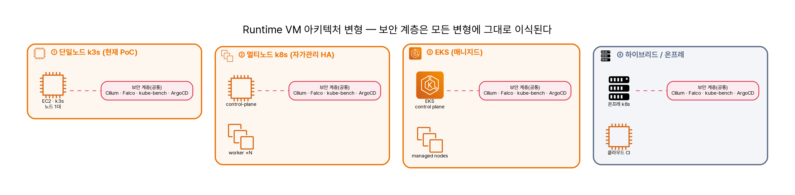

도입 시나리오 — 새 워크로드를 골든패스에 태우기¶
한 핀테크가 새 결제 API 레포를 만들었다고 하자. 이 골든패스를 어떻게 자기 것으로 만들까? 핵심은 "파이프라인을 새로 짜는 게 아니라, 가리키는 곳만 바꾼다" 이다. 새 GitHub 레포 → CI 연결 → 결과물 적재 → CD(GitOps) → 워크로드별 차이 → 보안도구 선택 → 런타임 보안의 실효성까지, 도입의 전 과정을 따라간다.
1. 유스케이스¶
핀테크 PayCorp가 결제 API 레포 payment-api(서비스 3개: auth · ledger · gateway)를 새로 만들었다. 보안팀은 매 배포의 "내보내도 되나" 판단을 사람 손이 아니라 파이프라인으로 옮기고 싶다. 골든패스(devsecops-path)를 그대로 가져와 자사 레포에 연결하는 것이 목표다.
2. CI 온보딩 — 어디를 수정하나¶
가장 중요한 사실 먼저: Jenkinsfile.aws-ci는 한 줄도 고치지 않는다. 18단계 파이프라인은 전부 파라미터화돼 있어서, Jenkins Job의 파라미터만 자사 값으로 바꾼다.
| 파라미터 | 의미 | 기본(PoC) | PayCorp 도입 시 |
|---|---|---|---|
APP_SOURCE_REPO_URL |
워크로드 소스 레포 | app-source-repo |
github.com/paycorp/payment-api |
MSA_WORKLOAD_DIR |
체크아웃 후 워크로드 루트 | …/examples/vulnbank-msa |
payment-api/services |
SERVICES |
빌드·스캔 대상 목록 | user-service,…,frontend |
auth,ledger,gateway |
HELM_CHART_DIR |
Checkov/Kubescape 대상 차트 | …/helm/vulnbank-msa |
…/helm/payment-api |
GITOPS_REPO_URL |
매니페스트(CD) 레포 | gitops-manifest-repo |
github.com/paycorp/payment-gitops |
REGISTRY_URL · REGISTRY_PROJECT |
Harbor 엔드포인트·네임스페이스 | …:8082 / secubank |
자사 Harbor / paycorp |
SONAR_TOKEN |
SonarQube 토큰(비우면 SAST 스킵) | Jenkins credential | 자사 토큰 |
ENFORCE_GATE |
게이트 차단 여부 | false(report-only) |
단계적으로 true |
새 레포가 갖춰야 할 최소 계약(이게 있어야 파이프라인이 탄다): Dockerfile, Helm 차트(또는 매니페스트), /healthz 프로브, (선택) OpenAPI 스펙. 상세는 코드·설정 맵과 도입 가이드에.
골든패스의 의미가 여기 있다. 새 워크로드 도입 = 파이프라인 교체가 아니라 파라미터 교체 + 최소 계약 충족. 파이프라인 로직(스캐너·게이트·증적)은 워크로드와 무관하게 그대로 재사용된다.
3. CI 결과물 — 어디에 쌓이고 어떻게 설정하나¶
빌드마다 reports/dev/<BUILD_NUMBER>/ 아래에 도구별 산출물이 누적된다(실측: Build #2 산출물이 …/workspace/vulnbank-msa-ci/reports/dev/2/에 실제로 쌓여 있었고, 그 SBOM을 재스캔해 2026 신규 CVE를 찾았다).
| 경로 | 내용 |
|---|---|
metadata.txt |
repo SHA · 서비스 목록 · 게이트 설정 |
gitleaks/ |
시크릿 스캔 |
sonarqube/ |
SAST |
checkov/ · kubescape/ |
IaC · K8s(NSA/MITRE/CIS) |
sbom/ |
SPDX + CycloneDX (서비스별) |
trivy/ |
이미지 CVE |
gate/ |
게이트 판정 |
ci-evidence-summary.txt |
전체 요약 |
여기에 더해 ① Harbor에 <REGISTRY_URL>/<PROJECT>/<service>:<tag> 이미지가 push되고, ② Jenkins Archive Evidence 단계가 위 리포트를 아티팩트로 영구 보관한다. ③ (선택) DefectDojo 중앙 triage — reports/를 import-scan으로 보내 finding lifecycle·SLA를 관리(현재는 수동/스크립트, 자동화는 도입사가 붙인다).
4. CI → CD — YAML이 어떻게 생성·갱신되나¶
CI는 Harbor에 이미지 push까지다. CD의 트리거는 GitOps 레포의 이미지 태그 갱신이다.
GitOps Helm values에서 갱신되는 지점:
services:
gateway:
image:
repository: <harbor>/paycorp/gateway
tag: "42" # ← CI BUILD_NUMBER 로 갱신되는 한 줄
정직하게: 현재 Jenkinsfile.aws-ci는 이미지 push까지만 하고, gitops 태그를 자동 커밋하는 스테이지는 없다. 도입사는 둘 중 하나를 붙인다 — (a) CI에 gitops update 스테이지 추가(yq로 태그 교체 후 gitops repo에 git commit/push), 또는 (b) Argo CD Image Updater가 Harbor를 watch해 자동 갱신. 어느 쪽이든 나머지는 ArgoCD의 automated sync(selfHeal)가 한다. (실측: falco 앱이 auto-sync라, gitops에 push하니 ConfigMap이 즉시 반영됐다.)
5. 워크로드 종류별 차이¶
파이프라인·게이트·런타임 통제는 언어 무관이다. 달라지는 건 SAST 룰셋과 SCA가 보는 패키지 생태계뿐.
| 워크로드 | 빌드 | SAST | SCA / SBOM | DAST 표면 | 특이점 |
|---|---|---|---|---|---|
| PHP (VulnBank) | php Dockerfile | SonarQube PHP | Trivy(OS+composer) · Syft | HTTP/OpenAPI | EOL 베이스이미지 CVE 다수 |
| Node | node Dockerfile | SonarQube JS/TS | npm SBOM · advisory | REST/GraphQL | 공급망(npm) 핵심 — axios류 |
| Java | maven/gradle | SonarQube Java | maven/gradle SBOM | REST | 깊은 의존성 트리 |
| Go | multi-stage | SonarQube Go / gosec | go.mod SBOM | gRPC/REST | distroless 베이스 → CVE 표면↓ |
| Python | pip Dockerfile | SonarQube Py / bandit | pip SBOM | REST | 네이티브 의존성 빌드 |
SBOM 포맷(SPDX/CycloneDX)·Trivy·게이트·Falco/Cilium은 그대로 적용된다 — 워크로드는 최소 계약만 맞추면 된다.
6. 다양한 Runtime VM 아키텍처¶
런타임은 한 가지가 아니다. 규모·HA·운영부담·규제에 따라 네 가지로 갈린다. 어느 변형이든 Cilium·Falco·kube-bench·ArgoCD 계층은 그대로 이식된다(런타임 보안은 클러스터 형태와 무관).
| 변형 | 구성 | 적합 | 트레이드오프 |
|---|---|---|---|
| ① 단일노드 k3s (현재 PoC) | EC2 1대 + k3s | PoC · 교육 · 소규모 | HA 없음 — 노드 다운 시 전체 정지 |
| ② 멀티노드 k3s/k8s(자가관리) | EC2 3+대, control-plane HA | 중규모 · 비용통제 | 운영부담(업그레이드·etcd 백업) |
| ③ EKS(매니지드) | EKS + managed node group | 규모 · 운영 위임 | 비용↑, 컨트롤플레인은 AWS가 |
| ④ 하이브리드 / 온프레 | 온프레 k8s + 클라우드 CI | 규제 · 데이터 거주성 | 네트워크·이미지 동기화 설계 |

어느 변형이든 보안 계층(Cilium·Falco·kube-bench·ArgoCD)은 그대로 이식된다 — 런타임 보안은 클러스터 형태(k3s·k8s·EKS·온프레)와 무관하게 동작한다. AWS 공식 아이콘 기반이며
diagram/runtime-variants.py로 재현 가능하다.
7. 보안 도구 선택 — 조직 유형·목표별¶
도구는 전부 켜는 게 아니라 조직의 목표에 맞춰 강조점을 둔다.
| 조직 / 목표 | 강조 도구 | 이유 |
|---|---|---|
| 금융 · 규제(컴플라이언스) | Kubescape(CIS/NSA) · DefectDojo · 이미지 서명(Cosign) · kube-bench | 감사·증적·규제 매핑이 1순위 |
| 스타트업 · 속도(shift-left 최소) | Trivy · Gitleaks · Gate(report-only) | 빠른 피드백, 개발 마찰 최소화 |
| 공급망 리스크 중심 | SBOM 재평가 · Trivy · Cosign/Kyverno · Cilium egress | 신뢰 의존성 무기화·C2 차단 |
| 멀티테넌시 · 런타임 위협 | Cilium(L7 정책) · Falco · Hubble | 측면이동·런타임 행위 탐지 |
원칙은 공통이다 — report-only로 시작해 노이즈를 줄인 뒤 단계적으로 enforce. (→ 도입 가이드의 단계 로드맵)
8. Runtime VM의 실효성·효과¶
빌드 검사를 통과한 악성도 런타임에서 막힌다 — 그게 런타임 보안의 존재 이유다. 이번에 AWS 라이브로 실증했다(증적):
- 정적분석(SAST)은 의도 취약점 0/4, 동적분석(DAST) 3/4 — 그래도 통과한 페이로드를 런타임이 잡는다.
- Falco: 웹쉘 업로드·셸 spawn 실제 발화(
proc=php target=…/uploads/…webshell.php). - Cilium egress: 외부 C2(
1.1.1.1) 연결이Policy denied DROPPED— 악성이 배포돼도 밖으로 못 나간다.
런타임 보안이 없으면, 0-day 악성 의존성이 모든 빌드 검사를 통과하는 순간 무방비다. 런타임 egress 차단·행위 탐지가 그 마지막 갭을 메운다 — 빌드(SCA known) + 시간축(SBOM 재평가) + 런타임(Falco/Cilium)의 3겹 중, 런타임 VM이 배포 이후를 책임진다. 이건 이론이 아니라 위 증적으로 입증됐다.